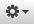

Responsive Resize
Switching between the Dark or Light theme
Responsive Resize has two different display modes - Dark or Light. By default the Dark theme is active but you can change it to Light any time.
- Open the 'customize' menu by clicking on the  icon in the bottom left-hand corner of the main application window.
- Select 'Switch to Light Theme…' from the menu, and the display will change to the Light theme.
NOTE: You can also change the theme from the 'Devices' menu on the menu bar, or by using the ⌘T keyboard shortcut